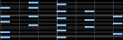
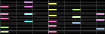
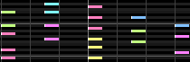
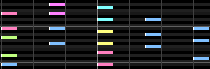
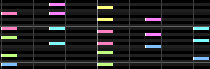
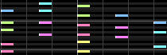
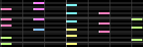
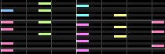

グループ機能
現在のトラックにおいて、グループ化を一括で行う機能です。
説明
要素をクリックすると説明が表示されます。具体例
- 画像はBMSツクール2のものですが、BmsMaker3でも挙動は同じです。
|

元の並び |

グループ数:2 / 上から |

グループ数:2 / 下から |

グループ数:3 / 上から |
|

個数:2 / 上から |

個数:2 / 下から |

個数:3 / 上から |

個数:4 / 下から |